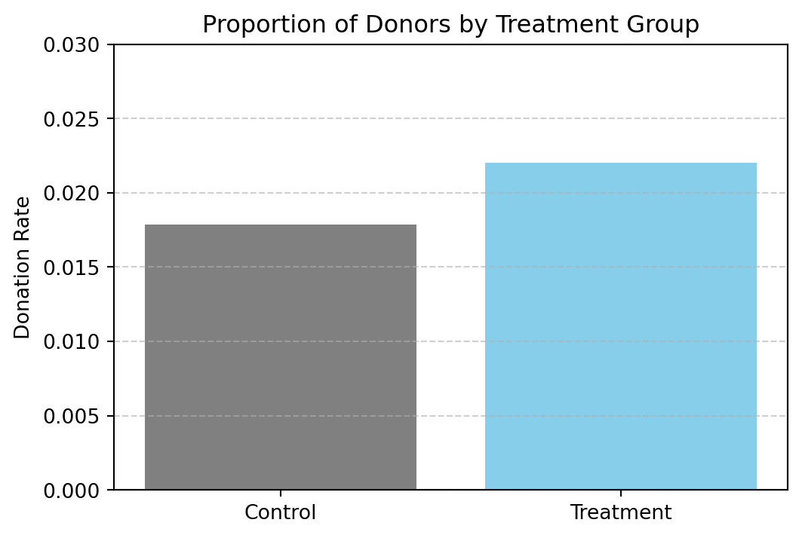
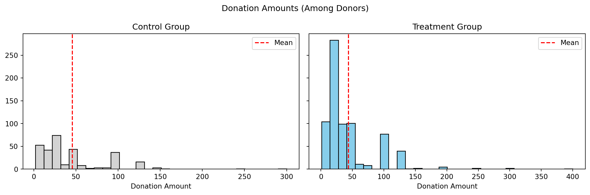
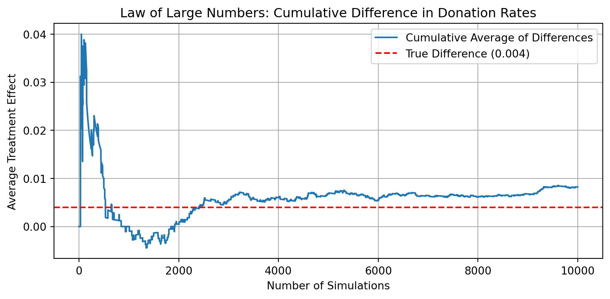
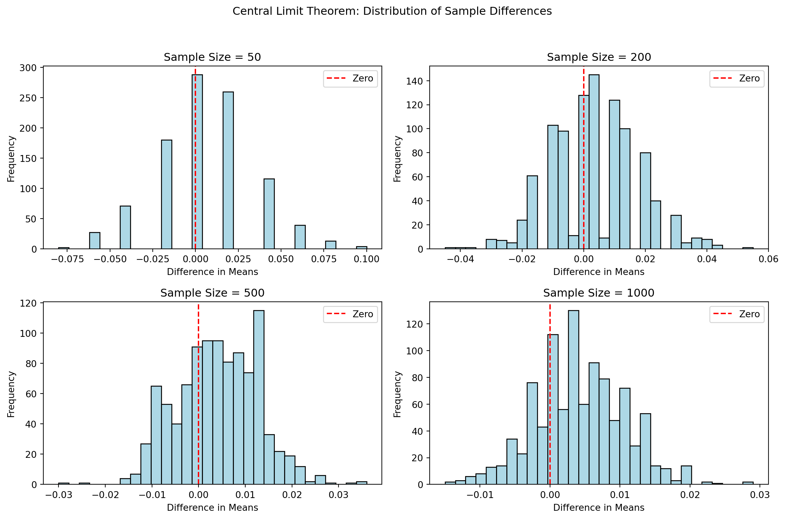

Dean Karlan at Yale and John List at the University of Chicago conducted a field experiment to test the effectiveness of different fundraising letters. They sent out 50,000 fundraising letters to potential donors, randomly assigning each letter to one of three treatments: a standard letter, a matching grant letter, or a challenge grant letter. They published the results of this experiment in the American Economic Review in 2007. The article and supporting data are available from the AEA website and from Innovations for Poverty Action as part of Harvard’s Dataverse.
Dean Karlan at Yale and John List at the University of Chicago conducted a large-scale natural field experiment to understand whether matching grants increase charitable giving. Specifically, they collaborated with a liberal nonprofit organization in the United States and sent direct mail solicitations to 50,083 previous donors.
These individuals were randomly assigned into:
A control group (received a standard fundraising letter),
A treatment group (received a letter mentioning a matching grant).
Within the treatment group, subjects were further randomized along three dimensions:
Match ratio: 1:1, 2:1, or 3:1 (i.e., for each dollar donated, a matching donor would contribute 1, 2, or 3 dollars).
Maximum match threshold: $25,000, $50,000, $100,000, or unstated.
Suggested donation amount: set to their previous highest contribution, or 1.25x / 1.5x of that amount.
The goal was to determine whether: - The presence of a match offer increases response rate or donation amount, - Higher match ratios further increase donations, - Other factors such as match thresholds or suggested donation amounts influence behavior.
The findings were published in the American Economic Review in 2007 and remain widely cited in the economics of charitable giving.
This project seeks to replicate their results.
Data
Description
The dataset includes 50,083 prior donors to a liberal nonprofit organization. Each row corresponds to a recipient of a fundraising letter and includes information on their treatment assignment, past donation behavior, and demographics.
Key summary statistics from the data are shown below. Notable variables include: - treatment: 1 if the individual received a letter mentioning a matching grant - gave: 1 if the individual donated in response to the letter - amount: total amount donated - mrm2: number of months since last donation
We use this data to replicate and analyze the effects reported by Karlan & List (2007).
import pandas as pddf = pd.read_stata("karlan_list_2007.dta")df.head()
Suggested donation was highest previous contribution
askd2
Suggested donation was 1.25 x highest previous contribution
askd3
Suggested donation was 1.50 x highest previous contribution
ask1
Highest previous contribution (for suggestion)
ask2
1.25 x highest previous contribution (for suggestion)
ask3
1.50 x highest previous contribution (for suggestion)
amount
Dollars given
gave
Gave anything
amountchange
Change in amount given
hpa
Highest previous contribution
ltmedmra
Small prior donor: last gift was less than median $35
freq
Number of prior donations
years
Number of years since initial donation
year5
At least 5 years since initial donation
mrm2
Number of months since last donation
dormant
Already donated in 2005
female
Female
couple
Couple
state50one
State tag: 1 for one observation of each of 50 states; 0 otherwise
nonlit
Nonlitigation
cases
Court cases from state in 2004-5 in which organization was involved
statecnt
Percent of sample from state
stateresponse
Proportion of sample from the state who gave
stateresponset
Proportion of treated sample from the state who gave
stateresponsec
Proportion of control sample from the state who gave
stateresponsetminc
stateresponset - stateresponsec
perbush
State vote share for Bush
close25
State vote share for Bush between 47.5% and 52.5%
red0
Red state
blue0
Blue state
redcty
Red county
bluecty
Blue county
pwhite
Proportion white within zip code
pblack
Proportion black within zip code
page18_39
Proportion age 18-39 within zip code
ave_hh_sz
Average household size within zip code
median_hhincome
Median household income within zip code
powner
Proportion house owner within zip code
psch_atlstba
Proportion who finished college within zip code
pop_propurban
Proportion of population urban within zip code
Balance Test
As an ad hoc test of the randomization mechanism, I provide a series of tests that compare aspects of the treatment and control groups to assess whether they are statistically significantly different from one another.
To evaluate the success of the randomization, we tested whether key background variables differed between the treatment and control groups. Specifically, we examined:
mrm2: the number of months since the last donation
freq: the number of prior donations made by the donor
We used both t-tests and linear regression.
Experimental Results
For mrm2, the t-test and regression output returned NaN values, likely due to missing or corrupted entries in the column. We will revisit this variable after inspecting the data.
For freq, the regression showed a coefficient on treatment of –0.012, with a p-value of 0.912, indicating no statistically significant difference between groups.
These results imply that the treatment and control groups were well-balanced with respect to prior donation behavior. This supports the assumption that any difference in outcomes (such as donation rates) can be attributed to the treatment rather than pre-existing differences.
Why is Table 1 in the paper?
Table 1 in Karlan & List (2007) serves exactly this purpose: it demonstrates that randomization worked. If treatment and control groups are balanced on observable pre-treatment characteristics, readers can have greater confidence in the causal interpretation of subsequent comparisons. Including a balance table is a standard best practice in experimental papers, especially when the goal is to isolate treatment effects.
Charitable Contribution Made
First, I analyze whether matched donations lead to an increased response rate of making a donation.

from scipy.stats import ttest_indimport pandas as pddf = pd.read_stata("karlan_list_2007.dta")# Split groupscontrol_gave = df[df["treatment"] ==0]["gave"]treat_gave = df[df["treatment"] ==1]["gave"]# Run t-testttest_ind(control_gave, treat_gave)
import pandas as pddf = pd.read_stata("karlan_list_2007.dta")import statsmodels.api as sm# Define X and yX = sm.add_constant(df["treatment"])y = df["gave"]# Run OLS regressionmodel = sm.OLS(y, X).fit()model.summary2().tables[1][["Coef.", "Std.Err.", "P>|t|"]]
Coef.
Std.Err.
P>|t|
const
0.017858
0.001101
4.779032e-59
treatment
0.004180
0.001348
1.927403e-03
We first tested whether the treatment group was more likely to donate using a t-test. The result was statistically significant (p ≈ 0.002), indicating that the difference in donation rates between treatment and control is unlikely to be due to chance.
To confirm this, we ran a simple linear regression with gave as the dependent variable and treatment as the explanatory variable. The estimated treatment effect was approximately 0.42 percentage points, meaning that individuals who received a matching grant letter were 0.42 percent more likely to donate. The result was again statistically significant with p less than 0.01.
These findings align with Table 2a, Panel A in Karlan and List (2007), and suggest that simply mentioning a matching grant in a fundraising letter can causally increase the probability of donation. This highlights that even subtle framing changes in solicitation messages can meaningfully affect charitable behavior, likely by making the act of giving feel more impactful or urgent.
import pandas as pddf = pd.read_stata("karlan_list_2007.dta")import statsmodels.api as sm#| label: gave-probit#| message: false#| warning: false#| # Define X and yX = sm.add_constant(df["treatment"])y = df["gave"]# Run Probit modelprobit_model = sm.Probit(y, X).fit()probit_model.summary2().tables[1][["Coef.", "Std.Err.", "P>|z|"]]
Optimization terminated successfully.
Current function value: 0.100443
Iterations 7
Coef.
Std.Err.
P>|z|
const
-2.100141
0.023316
0.000000
treatment
0.086785
0.027879
0.001852
Differences between Match Rates
Next, I assess the effectiveness of different sizes of matched donations on the response rate.
We compare the response rates between different match ratios using t-tests. The comparison between the 1:1 and 2:1 match groups yields a p-value of approximately 0.335, and the comparison between 2:1 and 3:1 yields a p-value near 0.96. These results are not statistically significant at the 95 percent confidence level.
This means that increasing the match ratio from 1:1 to 2:1 or from 2:1 to 3:1 does not make individuals more likely to donate. The findings support the comment on page 8 of Karlan and List (2007) that larger match ratios do not meaningfully improve donation rates. The presence of a match itself seems to matter, but further increasing its size does not have additional impact on behavior.
import pandas as pddf = pd.read_stata("karlan_list_2007.dta")#| label: regression-match-ratios#| message: false#| warning: falseimport statsmodels.api as sm# ratio1 is the baseline group, so we drop itX = treated[["ratio2", "ratio3"]]X = sm.add_constant(X)y = treated["gave"]match_model = sm.OLS(y, X).fit()match_model.summary2().tables[1][["Coef.", "Std.Err.", "P>|t|"]]
Coef.
Std.Err.
P>|t|
const
0.020749
0.001391
3.981333e-50
ratio2
0.001884
0.001968
3.382805e-01
ratio3
0.001984
0.001968
3.133172e-01
We regress the binary outcome variable gave on two dummy variables: ratio2 and ratio3, representing 2:1 and 3:1 match ratios respectively. The baseline group is ratio1, which corresponds to a 1:1 match.
The estimated coefficients on ratio2 and ratio3 are approximately 0.0019 and 0.0020. These values indicate that donors offered a 2:1 or 3:1 match were about 0.19 or 0.20 percentage points more likely to donate than those offered a 1:1 match. However, both estimates have p-values well above conventional significance thresholds: 0.338 for ratio2 and 0.313 for ratio3.
This lack of statistical significance means we cannot rule out the possibility that the observed differences are due to chance. The results suggest that increasing the match ratio from 1:1 to 2:1 or 3:1 does not lead to a meaningful increase in the probability of donation.
import pandas as pddf = pd.read_stata("karlan_list_2007.dta")#| label: match-ratio-differences-2#| message: false#| warning: false# Direct differences in donation rates from datarate_diff_2_vs_1 = gave_2to1.mean() - gave_1to1.mean()rate_diff_3_vs_2 = gave_3to1.mean() - gave_2to1.mean()# Differences from regression coefficientscoef_2_vs_1 = match_model.params["ratio2"] # relative to baseline (1:1)coef_3_vs_2 = match_model.params["ratio3"] - match_model.params["ratio2"](rate_diff_2_vs_1, rate_diff_3_vs_2), (coef_2_vs_1, coef_3_vs_2)
The difference in donation rates between the 2:1 and 1:1 match ratios is approximately 0.19 percentage points, and between the 3:1 and 2:1 match ratios is about 0.01 percentage points. These differences are very small and not statistically significant.
Both the direct calculation from the data and the regression-based estimates lead to the same conclusion: increasing the size of the match offer does not meaningfully increase the likelihood that a donor gives. This implies that larger matching ratios are not more effective than a simple 1:1 match.
These results reinforce the interpretation in Karlan and List (2007) that what matters is the presence of a match, not how generous it is. Fundraising efforts may be better off focusing on whether to include a match offer rather than trying to optimize its size.
Size of Charitable Contribution
In this subsection, I analyze the effect of the size of matched donation on the size of the charitable contribution.
import pandas as pddf = pd.read_stata("karlan_list_2007.dta")#| label: amount-regression-full#| message: false#| warning: falseimport statsmodels.api as sm# Define inputsX = sm.add_constant(df["treatment"])y = df["amount"]# Fit modelamount_model = sm.OLS(y, X).fit()amount_model.summary2().tables[1][["Coef.", "Std.Err.", "P>|t|"]]
Coef.
Std.Err.
P>|t|
const
0.813268
0.067418
1.843438e-33
treatment
0.153605
0.082561
6.282029e-02
We ran a regression of donation amount on treatment status using the full sample, which includes both donors and non-donors.
The estimated treatment effect is approximately 0.15 dollars, meaning that individuals in the treatment group gave slightly more on average than those in the control group. However, the p-value is around 0.063, which is slightly above the conventional 0.05 threshold for statistical significance.
This means that we cannot confidently conclude that the matching donation offer increases the total amount donated. The result suggests a possible positive effect, but it is not statistically robust enough to rule out chance. It appears that the treatment might have a small effect on total giving, but further evidence would be needed to confirm it.
import pandas as pddf = pd.read_stata("karlan_list_2007.dta")#| label: amount-regression-full#| message: false#| warning: falseimport statsmodels.api as sm# Define inputsX = sm.add_constant(df["treatment"])y = df["amount"]# Fit modelamount_model = sm.OLS(y, X).fit()amount_model.summary()
OLS Regression Results
Dep. Variable:
amount
R-squared:
0.000
Model:
OLS
Adj. R-squared:
0.000
Method:
Least Squares
F-statistic:
3.461
Date:
Wed, 23 Apr 2025
Prob (F-statistic):
0.0628
Time:
22:38:08
Log-Likelihood:
-1.7946e+05
No. Observations:
50083
AIC:
3.589e+05
Df Residuals:
50081
BIC:
3.589e+05
Df Model:
1
Covariance Type:
nonrobust
coef
std err
t
P>|t|
[0.025
0.975]
const
0.8133
0.067
12.063
0.000
0.681
0.945
treatment
0.1536
0.083
1.861
0.063
-0.008
0.315
Omnibus:
96861.113
Durbin-Watson:
2.008
Prob(Omnibus):
0.000
Jarque-Bera (JB):
240735713.635
Skew:
15.297
Prob(JB):
0.00
Kurtosis:
341.269
Cond. No.
3.23
Notes: [1] Standard Errors assume that the covariance matrix of the errors is correctly specified.
We ran a linear regression of the amount donated on treatment status, using the full sample that includes individuals who did not donate.
The treatment coefficient is approximately 0.15, suggesting that individuals in the treatment group gave about 15 cents more on average than those in the control group. However, this estimate is only marginally statistically significant, with a p-value of 0.063.
This result provides some weak evidence that matching offers may increase average donations, but it is not strong enough to be conclusive.
Because this analysis includes non-donors whose amount is zero, the estimated coefficient captures both the treatment’s effect on the likelihood of giving and on the amount given conditional on giving. As a result, the coefficient does not have a clear causal interpretation for donation size alone. It blends two effects: whether people donate and how much they donate if they do. To isolate the effect on donation size, we need to restrict the sample to donors only.

We create separate histograms of donation amounts for the control and treatment groups, including only individuals who made a donation. A red vertical line marks the mean donation amount in each group.
The shapes of the distributions are similar, with most donations concentrated at smaller amounts. Both groups have a long right tail due to a small number of larger donations. The average donation in the treatment group appears slightly lower than in the control group.
This visual impression is consistent with our earlier regression analysis, which showed no statistically significant treatment effect on the donation amount, conditional on giving. Overall, the match offer does not appear to influence how much people give once they decide to donate.
Simulation Experiment
As a reminder of how the t-statistic “works,” in this section I use simulation to demonstrate the Law of Large Numbers and the Central Limit Theorem.
Suppose the true distribution of respondents who do not get a charitable donation match is Bernoulli with probability p=0.018 that a donation is made.
Further suppose that the true distribution of respondents who do get a charitable donation match of any size is Bernoulli with probability p=0.022 that a donation is made.
Law of Large Numbers

The plot shows the cumulative average of the difference in outcomes between simulated treatment and control groups over 10,000 draws. Each individual simulation is based on a Bernoulli process with probabilities 0.022 for the treatment group and 0.018 for the control group.
Initially, the cumulative average fluctuates widely, but as the number of simulations increases, the fluctuations diminish and the average converges toward the true difference in means, which is 0.004.
This demonstrates the Law of Large Numbers. As the sample size grows, the sample average becomes a more reliable estimate of the expected value. In this case, with enough simulations, the average observed treatment effect approximates the true treatment effect.
Central Limit Theorem

The histograms show the distribution of the difference in means between treatment and control groups across 1000 simulated experiments, for sample sizes of 50, 200, 500, and 1000.
As the sample size increases, the distribution becomes more concentrated around the true average difference. At smaller sample sizes such as 50, the distribution is wide, and zero lies well within the center. This reflects a high degree of uncertainty in small samples.
At larger sample sizes, especially n = 1000, the distribution becomes narrower and more symmetric, approximating a normal distribution. In these cases, zero is closer to the edge or tail of the distribution. This means that with larger samples, we are less likely to observe a difference near zero if the true difference is positive, as it is in this simulation.
Overall, this confirms the Central Limit Theorem and illustrates how increased sample size improves our ability to detect small but real differences between groups.